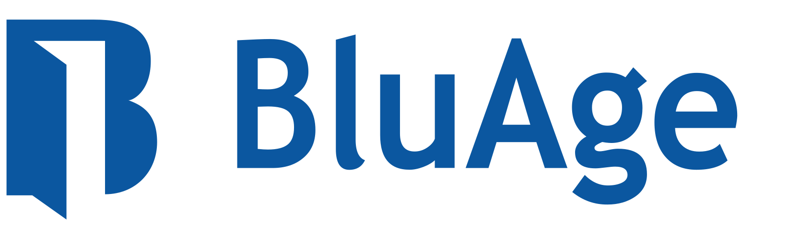
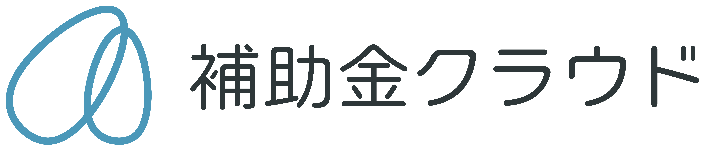
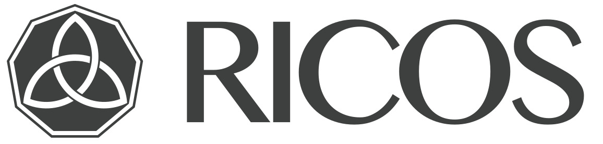
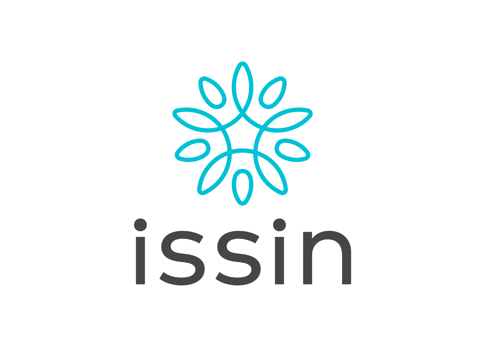

PORTFOLIO
投資先一覧
前身ファンド（GP: Angel Bridge）投資実績


本ファンド（GP: UT創業者の会LLP）投資実績







U-TOKYO ENTREPRENEUR SUPPORTER'S CLUB · INCUBATION FUND
Tokyo Entrepreneur Incubation Fund
東京大学出身の上場起業家が
後輩起業家を手厚く支援する
NEWS
東大創業者の会×SVCOアカデミー 「高い企業価値を目指すエクイティストーリーとは？」勉強会イベントを開催いたしました
2026年1月9日(金)にgoodoffice新橋にて、東大創業者の会とフィナンシャル・バリュー＆アドバイザーズの共催で勉強会イベントを開催し、東大出身スタートアップの方を中心に、約30名の方…
【2026/1/9(金)開催】「高い企業価値を目指すエクイティストーリーとは？」勉強会型イベントのお知らせ
いつもお世話になっております。東大創業者の会事務局です。東大創業者の会では、ファイナンシャル・バリュー＆アドバイザーズ株式会社と共催し、「スタートアップのための大きな企業価値を創出するエクイティストー…
スタートアップの事業成長を加速する「事業計画の極意」講演会を開催いたしました
2025年11月13日(木)にgoodoffice新橋にて、スタートアップの事業成長を加速する「事業計画の極意」講演会を開催し、東大出身起業家の方を中心に、約20名の方にお集まりいただきまして、活気…
ABOUT
私たちは東京大学出身で株式上場を果たした起業家のコミュニティより誕生いたしました
2010年に発足した私たち「東大創業者の会」は、2018年のファンド立ち上げ以降、これまで31社への出資・事業支援を行って参りました。今後さらなる支援の輪を広げ「事業資金/ネットワーク/メンタリング」という多様な視点から東大出身事業家の上場をサポートするべく、2022年5月に新「東大創業者の会ファンド」を設立いたしました。
PORTFOLIO
前身ファンド（GP: Angel Bridge）投資実績

本ファンド（GP: UT創業者の会LLP）投資実績



FUND SIZE
10-15億円
ファンドサイズ
INVESTMENT
500万〜1億
投資金額
CONDITION
東大在籍・出身者
東京大学在籍者・出身者が創業し経営するスタートアップ
REVIEW PERIOD
約2カ月
審査期間
ACTIVITIES
「ピッチイベント」や「パネルディスカッション」だけでなく、定期的な懇親会など、さまざまな活動を行なっております。

PITCH EVENT
スタートアップによるピッチイベント。エンジェル投資家や他ベンチャーキャピタルや事業会社との連携も含めた起業家支援も。

PANEL DISCUSSION
定期的に開催するイベントにて、東大出身の上場経験者を中心に先輩起業家のハードシングスやノウハウをディスカッション形式で共有。
WHAT WE OFFER
東大出身者で創業した上場メンバーとのネットワークを事業に活用
シェアオフィス拠点・人材採用などメンバー企業のサービス優待
メンターサポートによる、上場経験を持つ先輩起業家からのアドバイス
「東大創業者の会応援ファンド」は、「事業資金」だけでなく「ネットワーク」や「自分たちの経験」のような総合的なサポート体制で東大出身の若手起業家を応援いたします。
JOIN US
以下の条件を満たす方は、どなたでも東大創業者の会コミュニティにご入会いただけます。入会を希望される方は、下のフォームよりご登録をお願いします。事務局にて条件を満たしているかを確認の上、入会手続きを行います。
MEDIA
Mathmaji社が、一般社団法人グローバルEdTech推進委員会主催による「ASU（アリゾナ州立大学）+GSV（グローバルシリコンバレー）Summit 2026 日本予選」で最優秀賞を獲得しました。
2025/02/23
事業計画・予実管理ツール「Vividir（ビビディア）」を提供する株式会社プロファイナンスの代表である木村氏が従前より提供していた「事業計画講座」を基に、中央経済社より著書が出版されました。
2024/12/09
東洋経済が毎年選出する「すごいベンチャー100」の2024年版に、出資先のまん福ホールディングス株式会社と株式会社Alumnoteが選出されました。
2024/11/7
MEMBERS
2010年に発足した「東大創業者の会」は、2018年にファンドを立ち上げこれまで10社への出資・事業支援を行って参りました。今後さらに支援の輪を広げ、「事業資金/ネットワーク/メンタリング」という多様な視点から東大出身事業家の上場をサポートするため、2022年5月に新「東大創業者の会ファンド」を東大創業者の会の発起人である下記4人のメンバーによって設立されました。

スローガン株式会社
創業者
東京大学文学部行動文化学科卒業後、2000年に日本IBM株式会社に入社。2005年末にスローガン株式会社を設立、代表取締役に就任。2021年東証マザーズ上場。2023年2月末で社長退任し、現はKMFG株式会社代表をはじめいくつかの営利・非営利の組織に関わる。

gooddaysホールディングス株式会社
代表取締役
東京大学経済学部卒業後、竹中工務店・BCGに勤務。2009年にハプティック株式会社、2013年にグッドルーム株式会社を創業。2016年にグループ3社から成るgooddaysホールディングス株式会社を創業し、代表取締役副社長に就任。2019年東証マザーズ上場。

株式会社エルテス
代表取締役社長
東京大学経済学部に在学中の2004年にエルテスを創業。ビッグデータ解析・ソーシャルリスクマネジメントを行う。2016年東証マザーズ上場。

スター・マイカ・ホールディングス株式会社
代表取締役社長
東京大学農学部卒業後、三井物産・BCG・ゴールドマンサックスに勤務。2002年にスター・マイカを創業。中古マンション流通を中心に様々な不動産サービスを提供。2006年ジャスダック、2017年東証1部上場。
MENTORS
.jpg)
株式会社ユーグレナ
代表取締役社長
東京大学農学部卒業後、東京三菱銀行に入行。2005年にユーグレナを創業し、微細藻類ユーグレナ（ミドリムシ）の食用屋外大量培養を実現。2012年東証マザーズ、2014年東証1部上場。

株式会社IBJ
代表取締役会長
東京大学経済学部卒業後、日本興業銀行（現みずほ銀行）に入行。2006年にIBJを設立し、婚活・結婚相談所事業を展開。2012年ジャスダック、2015年東証1部上場。

ロードスターキャピタル株式会社
代表取締役社長
東京大学農学部卒業後、日本不動産研究所やゴールドマン・サックスなどを経て、2012年にロードスターキャピタルを創業。不動産投資・クラウドファンディング事業を展開し、2017年東証マザーズ上場。

ULSコンサルティング株式会社
取締役会長
東京大学工学部計数工学科卒業後、沖電気工業に入社。2000年にウルシステムズ（現ULSコンサルティング）を創業し、戦略ITコンサルティングを展開。2006年JASDAQ上場。

株式会社プロジェクトホールディングス
代表取締役社長
東京大学および東京大学大学院農学生命科学研究科修了後、スカイライトコンサルティングを経て、2016年にプロジェクトカンパニー（現プロジェクトホールディングス）を創業。DXコンサルティング事業を展開し、2021年東証マザーズ上場。

株式会社coly
代表取締役副社長
東京大学文学部卒業後、2014年にcolyを創業。女性向けモバイルオンラインゲームの企画・開発を手掛け、「魔法使いの約束」などのヒット作を展開。2021年東証マザーズ上場。
株式会社ミダスキャピタル
代表パートナー
東京大学経済学部卒業。在学中の2003年にValcomを創業後、2007年にエアトリを共同創業。2016年東証マザーズ、2017年東証1部上場。その後2017年にミダスキャピタルを創業。

株式会社レアジョブ
代表取締役社長
東京大学工学部および東京大学大学院情報理工学系研究科修了後、NTTドコモを経て、2007年にレアジョブを共同創業。オンライン英会話サービスを展開し、2014年東証マザーズ、2020年東証1部上場。

アルー株式会社
代表取締役社長
東京大学大学院理学系研究科修了後、ボストンコンサルティンググループに入社。2003年にエデュ・ファクトリー（後のアルー）を創業し、人材育成・社員研修事業を展開。2018年東証マザーズ上場。

株式会社JMDC
執行役員
東京大学大学院工学系研究科修了後、Googleやグリーを経て、2013年にクービックを創業。2020年にSTORESへ統合後、2023年よりJMDC執行役員兼CPOに就任。
CONTACT
※入会希望の方は、このページの上部に入会申請フォームがございますので、そちらからご記入をお願いします。
※出資条件を満たさない方からの出資のご相談が増えています。創業者もしくは、経営陣に東大出身(中退・院卒含む)の方がいらっしゃることが当会の出資条件となっておりますので、今一度ご確認くださいませ。
※コピー&ペーストの文章でのお問い合わせにはご連絡しかねますので、ご了承ください。